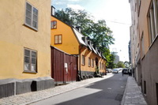
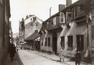
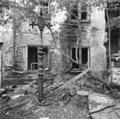
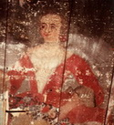
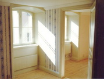

|
 Kvarngatan 5 söderut |
 Norrut |
 Före renovering |
 Takmålning från 1700-talet |
 Paradlägenhet |
|
Huset ja, från gatan kan det verka som om det endast vore ett enda hus, men faktiskt består fastigheten av fyra delar byggda kring en gård till vilken man kommer genom portiken mitt i gatufasaden Deras namn är gatuhuset, norra flygeln, södra flygeln och östra gårdshuset. Gatuhuset är det äldsta, byggt år 1726 av byggmästaren Michael Sontag åt fiskköparen Mats Olsson. Huset var ursprungligen endast en våning högt men byggdes på med vindsvåningen 1785. Samtidigt byggdes den norra flygeln liksom en del av den södra. Det östra gårdshuset var då redan uppfört, det byggdes år 1757 för fiskköparens Jean Kiellströms räkning. Övriga delar av den bebyggelse som nu finns tillkom mellan år 1803 och 1855 samt år 1903. Fastigheten Kvarngatan 5 har tillhört den enkla fattiga bebyggelsen som förr var så vanlig på Södermalm och som fortfarande ger stadsdelen dess särart. Fram till mitten av 1960-talet bodde här människor i lägenheter av vilka de flesta inte var större än hyresrum och där bekvämligheter till stor del saknades. Även överbefolkning rådde; mantalslängden från år 1904, just efter att indelningen i smålägenheter ägt rum, anger 63 vuxna och 59 barn boende i fastigheten. Lägenheterna - efter år 1903 22 stycken - bestod mestadels av ett rum inrett med kakelugn och en mindre kokvrå utrustad med vedspis, kallvattenkran och emaljerad utslagsvask. Elva stycken torrdass fanns, ett på varannan lägenhet således, förlagda till gården, det nu rivna trapphuset och vinden. Av de tidigare 22 små lägenheterna har nu blivit elva stycken av varierande storlekar. Lägenheten högst upp åt söder har en takmålning från 1700-talet, av konstnärligt hög kvalitet, med mittmotiv föreställande en kvinnoperson flankerad av medaljonger i hörnen med de fyra riksregalierna på sammetskuddar placerade på kistor utplacerade i gustavianska landskap. Blomster och rocailler, liksom en bård runt om finns där också. Kanske föreställer kvinnan drottning Lovisa Ulrika, ty likhet kan spåras om man jämför med andra målningar. En notering med poetisk anstrykning talar för en annan dam: På ett annat ställe antyds att en Munch (Munck?) i lönndom hyrde lägenheten 1775 av en Ulrika Pa.... Där skulle hemliga kärleksmöten ha ägt rum med en Sofia M. Kanske föreställer målningen denna dyrkade kvinna. Hursomhelst fann vi målningen i ett dåligt skick; den skulle kräva en kostsam konservering och renovering och har dessutom varit avsedd för ett enda oindelat rum; mellanväggar tillkomna under senare skeden har förtagit motivets helhetsverkan. Därför ansåg stadsmuseet att takmålningen borde skyddsinklädas och byggas igen, vilket också skedde. Men den finns kvar därunder, kanske för kommande, antikvariskt intresserade generationer att en dag bringa i dagen igen. Den gamla fastigheten Kvarngatan 5 har genom tre sekler genomgått skiftande öden. Gemensamt för dess historia har varit den ständiga förändringen. Husdelar har kommit till, andra har rivits eller omändrats. Lägenheter utvidgats och uppdelats, inredning och utrustning anpassats efter tidernas skiftande krav. Därmed kan man säga att huset faktiskt alltid har levt. En lång sömn har det avnjutit, kanske en välbehövlig vila efter 1900-talets häktiska överbefolkning, men det har nu vaknat till livs igen, redo för en ny lång period av förändring. Kanske är det just därför som huset har överlevat, därför att det aldrig har stelnat till stillestånd. Men en röd tråd löper genom hela dess historia: kontinuiteten; spåren av det förflutna har aldrig fullständigt raderats ut. Istället har lager lagts på lager, som trädets årsringar vilka lämnats avläsbara åt framtiden. På så sätt har vårt hus kommit att bli en levande historiebok, en allt värdefullare klenod för oss alla att lära och inspireras av. Och så vill vi ha våra gamla hus! Så växer sig vår byggnadskultur allt rikare. Då blir husen ovärderliga skatter, då blir de också bryggor mellan nuet, vårt förflutna och vår framtid. |
{kind=link}
{kind=link}
{kind=link}
{kind=link}
{kind=link}